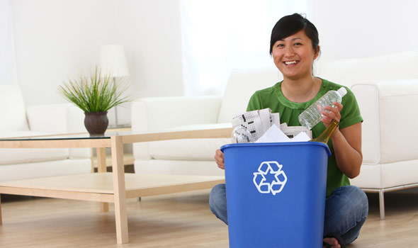
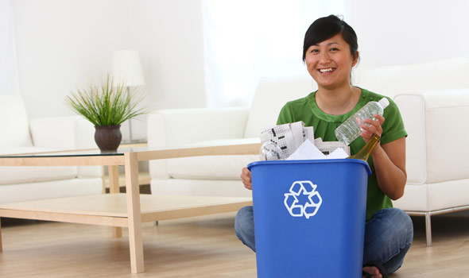

Every three months, Americans throw enough aluminum in the landfills to build our nation's entire commercial air fleet.
More than 28 billion glass bottles and jars end up in landfills every year -- that is the equivalent of filling up two Empire State Buildings every three weeks.
 

What Goes in Each Bin
| Blue | Brown | Green or Grey |
|---|---|---|
|
|
|
What Can't Go In Each Bin
| Blue | Brown | Green or Grey |
|---|---|---|
|
|
|
What Can't Be Recycled
| Pizza Boxes | Wet Paper | Plastic Bottle Caps |
| Juice Boxes | Plastic Bags | Styrofoam |
| Wire Hangers | Ceramics | Heavily-Dyed Paper |
| Fans | Used Paper Towels | Shredded Paper |